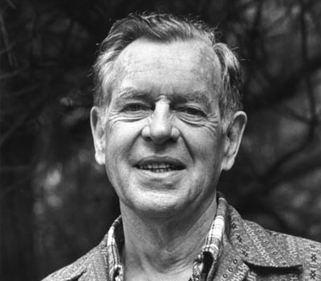

Two Kinds of Success
by phil on Sunday Jan 27, 2013 6:31 PM

(Joseph Campbell)
I noticed two kinds of people at Stanford: those who got there naturally, and those who got there artificially. To get there artificially means to have set getting to a good school as a goal, striving for it, doing meta-learning and psyching up, and very deliberately architecting your high school years toward getting there.
To get there naturally means to have worked hard in high school, yes, but without much personal strain. You did community service because you liked it, not because you wanted a line on your college apps. You worked hard for As but without sacrificing having fun and "being a kid." If anything, getting As was part of a fun social activity for your cohort in the AP and gifted classes.
Likewise, there are the successful who are the apparent result of their ambition. Think Hillary Clinton. Yes, they have some talents that are naturally suited to the positions they have attained, but the much greater source for their high station and accolades is their diligence and determination.
And then, there are the successful who are the apparent result of their natural talents. Think Joseph Campbell, who could've written more books, garnered millions in speaking gigs, but was content to stay at Sarah Lawrence College for what seems like at eternity. His successes are a more authentic expression of his being, and more likely to have been garnered with joy.